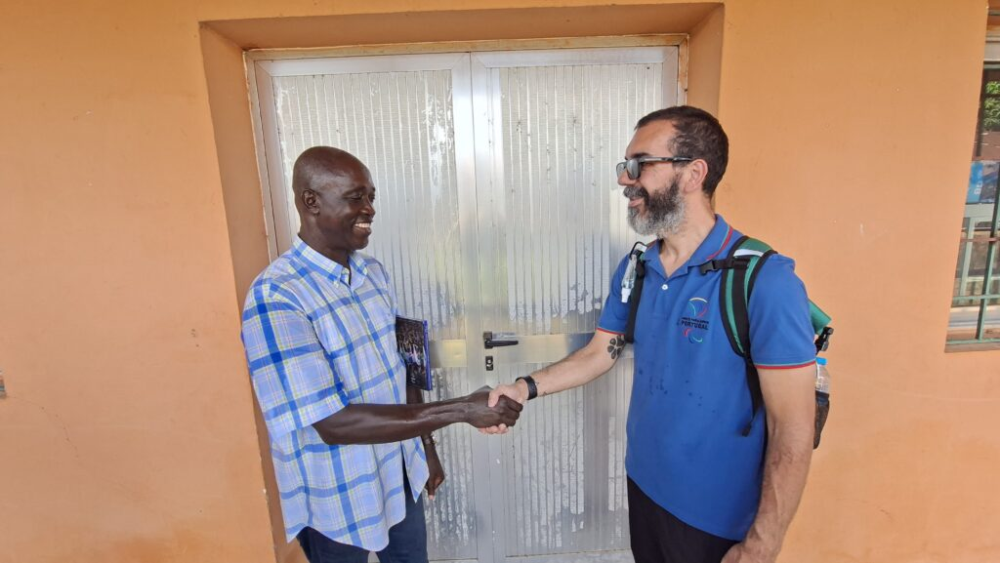
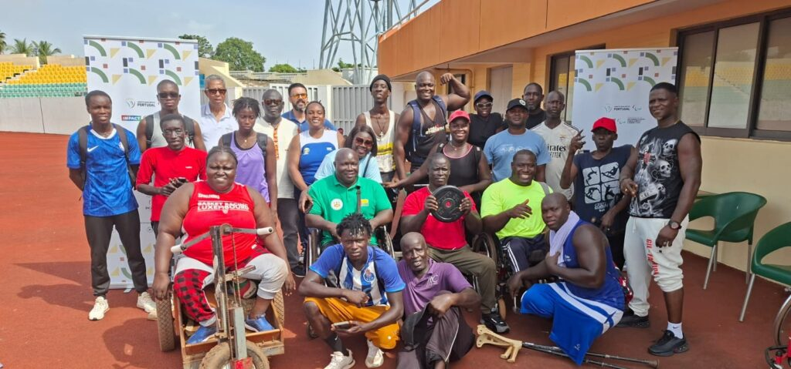

Galeria
Momentos do dia a dia da escola: aulas, atividades, eventos e encontros com as famílias.
Em destaque
Visita do CPP
Fotografias
Momentos da escola
Clique numa fotografia para a ver em tamanho maior. Pode navegar com os botões ou com as setas do teclado.
Fotografias da visita do Comité Paralímpico de Portugal (outubro 2026), da reportagem em vídeo e da publicação da Rádio Capital FM. Créditos nas legendas.
-
Visita do CPP — crédito Paralímpicos -

Campus em Ponta Gardete — crédito CPP -
Visita às instalações — crédito CPP -

Encontro na escola — crédito CPP -

Alunos da escola — crédito Rádio Capital FM -

Reportagem em vídeo — crédito YouTube / DMG TV -

Rede Lusófona em Bissau — crédito CPP -

Formação em Bissau — crédito CPP -

Dia da Criança — crédito Rádio Voz do Povo -

Sala de informática — crédito Rádio Sol Mansi -

Produção de blocos — crédito O Democrata GB